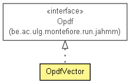

be.ac.ulg.montefiore.run.jahmm.io
Class OpdfVector
java.lang.Object
 be.ac.ulg.montefiore.run.jahmm.io.OpdfVector
be.ac.ulg.montefiore.run.jahmm.io.OpdfVector
- All Implemented Interfaces:
- be.ac.ulg.montefiore.run.jahmm.Opdf<be.ac.ulg.montefiore.run.jahmm.ObservationVector>, java.io.Serializable, java.lang.Cloneable
public class OpdfVector
- extends java.lang.Object
- implements be.ac.ulg.montefiore.run.jahmm.Opdf<be.ac.ulg.montefiore.run.jahmm.ObservationVector>

TODO: now only supports binary state for each vector element.
- See Also:
- Serialized Form
|
Constructor Summary |
OpdfVector(double[] b_i)
This is effectively converting from the b emission probability matrix from SupervisedLearner
TODO: Need to support other methods |
|
Method Summary |
OpdfVector |
clone()
|
int |
dimension()
|
void |
fit(java.util.Collection<? extends be.ac.ulg.montefiore.run.jahmm.ObservationVector> o)
|
void |
fit(java.util.Collection<? extends be.ac.ulg.montefiore.run.jahmm.ObservationVector> o,
double[] weights)
|
void |
fit(be.ac.ulg.montefiore.run.jahmm.ObservationVector... o)
|
void |
fit(be.ac.ulg.montefiore.run.jahmm.ObservationVector[] o,
double[] weights)
|
be.ac.ulg.montefiore.run.jahmm.ObservationVector |
generate()
|
static int |
getIntegerEquivalent(double[] vector,
int n)
|
int |
nbValues()
Number of permutations that can be formed from binary values of each element of the vector |
double |
probability(int k)
|
double |
probability(be.ac.ulg.montefiore.run.jahmm.ObservationVector obs)
|
java.lang.String |
toString(java.text.NumberFormat nf)
|
static double[] |
toVector(int number,
int n,
int dim)
Takes a number i and converts to n-ary form to populate cells of an array
E.g. |
| Methods inherited from class java.lang.Object |
equals, finalize, getClass, hashCode, notify, notifyAll, toString, wait, wait, wait |
probs
protected java.util.Map<java.lang.Integer,java.lang.Double> probs
NUM_OBSERVATION_DIM
protected int NUM_OBSERVATION_DIM
NUM_OBSERVATION_VALS
public static int NUM_OBSERVATION_VALS
EPSILON
public static double EPSILON
OpdfVector
public OpdfVector(double[] b_i)
- This is effectively converting from the b emission probability matrix from SupervisedLearner
TODO: Need to support other methods
- Parameters:
b_i - b[i] where i is a statestate - which output state this emission PDF is for
nbValues
public int nbValues()
- Number of permutations that can be formed from binary values of each element of the vector
- Returns:
dimension
public int dimension()
toVector
public static double[] toVector(int number,
int n,
int dim)
- Takes a number i and converts to n-ary form to populate cells of an array
E.g. for n=2 and len=5: i=2 gives [0,0,0,1,0], i=7 gives [0,0,1,1,1]
- Parameters:
number - to convertn - the base of the number spacedim - length of vector; number of dimensions of vector
- Returns:
getIntegerEquivalent
public static int getIntegerEquivalent(double[] vector,
int n)
clone
public OpdfVector clone()
- Specified by:
clone in interface be.ac.ulg.montefiore.run.jahmm.Opdf<be.ac.ulg.montefiore.run.jahmm.ObservationVector>- Overrides:
clone in class java.lang.Object
fit
public void fit(be.ac.ulg.montefiore.run.jahmm.ObservationVector... o)
- Specified by:
fit in interface be.ac.ulg.montefiore.run.jahmm.Opdf<be.ac.ulg.montefiore.run.jahmm.ObservationVector>
fit
public void fit(java.util.Collection<? extends be.ac.ulg.montefiore.run.jahmm.ObservationVector> o)
- Specified by:
fit in interface be.ac.ulg.montefiore.run.jahmm.Opdf<be.ac.ulg.montefiore.run.jahmm.ObservationVector>
fit
public void fit(be.ac.ulg.montefiore.run.jahmm.ObservationVector[] o,
double[] weights)
- Specified by:
fit in interface be.ac.ulg.montefiore.run.jahmm.Opdf<be.ac.ulg.montefiore.run.jahmm.ObservationVector>
fit
public void fit(java.util.Collection<? extends be.ac.ulg.montefiore.run.jahmm.ObservationVector> o,
double[] weights)
- Specified by:
fit in interface be.ac.ulg.montefiore.run.jahmm.Opdf<be.ac.ulg.montefiore.run.jahmm.ObservationVector>
generate
public be.ac.ulg.montefiore.run.jahmm.ObservationVector generate()
- Specified by:
generate in interface be.ac.ulg.montefiore.run.jahmm.Opdf<be.ac.ulg.montefiore.run.jahmm.ObservationVector>
probability
public double probability(be.ac.ulg.montefiore.run.jahmm.ObservationVector obs)
- Specified by:
probability in interface be.ac.ulg.montefiore.run.jahmm.Opdf<be.ac.ulg.montefiore.run.jahmm.ObservationVector>
probability
public double probability(int k)
- Parameters:
k - integer equivalent of values vector
- Returns:
toString
public java.lang.String toString(java.text.NumberFormat nf)
- Specified by:
toString in interface be.ac.ulg.montefiore.run.jahmm.Opdf<be.ac.ulg.montefiore.run.jahmm.ObservationVector>